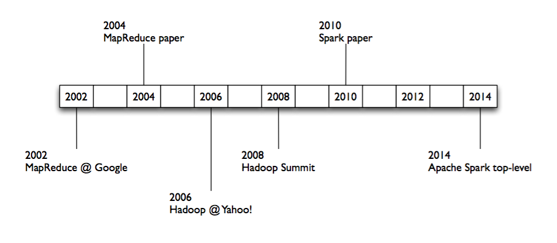
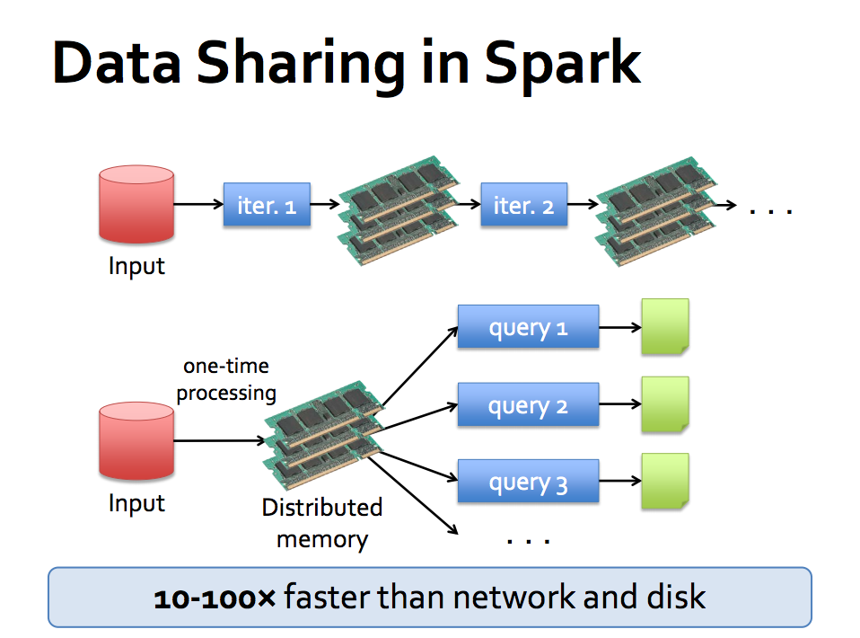
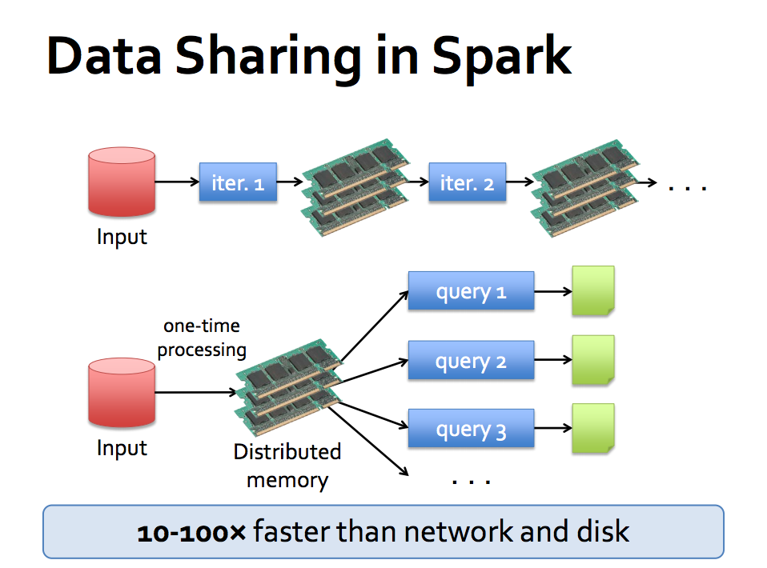
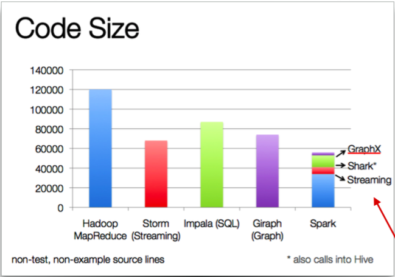

『 Spark 』1. spark 简介
2016-02-01
写在前面
本系列是综合了自己在学习spark过程中的理解记录 ＋ 对参考文章中的一些理解 ＋ 个人实践spark过程中的一些心得而来。写这样一个系列仅仅是为了梳理个人学习spark的笔记记录，所以一切以能够理解为主，没有必要的细节就不会记录了，而且文中有时候会出现英文原版文档，只要不影响理解，都不翻译了。若想深入了解，最好阅读参考文章和官方文档。
其次，本系列是基于目前最新的 spark 1.6.0 系列开始的，spark 目前的更新速度很快，记录一下版本好还是必要的。
最后，如果各位觉得内容有误，欢迎留言备注，所有留言 24 小时内必定回复，非常感谢。
Tips: 如果插图看起来不明显，可以：1. 放大网页；2. 新标签中打开图片，查看原图哦。
1. 如何向别人介绍 spark
Apache Spark™ is a fast and general engine for large-scale data processing.
Apache Spark is a fast and general-purpose cluster computing system.
It provides high-level APIs in Java, Scala, Python and R, and an optimized engine that supports general execution graphs.
It also supports a rich set of higher-level tools including :
- Spark SQL for SQL and structured data processing, extends to DataFrames and DataSets
- MLlib for machine learning
- GraphX for graph processing
- Spark Streaming for stream data processing
2. spark 诞生的一些背景


Spark started in 2009, open sourced 2010, unlike the various specialized systems[hadoop, storm], Spark’s goal was to :
- generalize MapReduce to support new apps within same engine
- it’s perfectly compatible with hadoop, can run on Hadoop, Mesos, standalone, or in the cloud. It can access diverse data sources including HDFS, Cassandra, HBase, and S3.
- speed up iteration computing over hadoop.
- use memory + disk instead of disk as data storage medium
- design a new programming modal, RDD, which make the data processing more graceful [RDD transformation, action, distributed jobs, stages and tasks]
 

3. 为何选用 spark
- designed, implemented and used as libs, instead of specialized systems;
- much more useful and maintainable

- from history, it is designed and improved upon hadoop and storm, it has perfect genes;
- documents, community, products and trends;
- it provides sql, dataframes, datasets, machine learning lib, graph computing lib and activitily growth 3-party lib, easy to use, cover lots of use cases in lots field;
- it provides ad-hoc exploring, which boost your data exploring and pre-processing and help you build your data ETL, processing job;
4. Next
下一篇，简单介绍 spark 里必须深刻理解的基本概念。
参考文章
本系列文章链接
- 『 Spark 』1. spark 简介
- 『 Spark 』2. spark 基本概念解析
- 『 Spark 』3. spark 编程模式
- 『 Spark 』4. spark 之 RDD
- 『 Spark 』5. 这些年，你不能错过的 spark 学习资源
- 『 Spark 』6. 深入研究 spark 运行原理之 job, stage, task
- 『 Spark 』7. 使用 Spark DataFrame 进行大数据分析